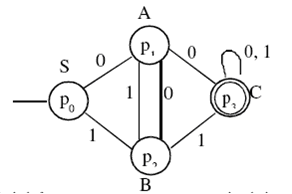

Existe un algoritmo que permite obtener una gramática regular que genera un lenguaje regular dado a partir del autómata finito que reconoce ese lenguaje. Los pasos a seguir son los siguientes:
- Asociar al estado inicial el símbolo distinguido S.
- Asociar a cada estado del autómata (menos el estado inicial) un símbolo no terminal.
- Para cada transición definida δ(qi, a) = qj, agregar al conjunto de producciones la producción A → aB, donde A y B los símbolos no-terminales asociados a qi y qj respectivamente. Si qj es un estado final, agregar también la producción A → ε.
Ejemplo:
L = { x | x ∈ {0, 1}* ∧ x contiene la subcadena 00 ∨ x contiene la subcadena 11}
El lenguaje es reconocido por le siguiente autómata finito:

Como al estado inicial no entran arcos, se asocia únicamente el símbolo distinguido S.
Primero asignamos un símbolo no-terminal a cada estado, comenzando por el estado inicial:
| p0 | S |
| p1 | A |
| p2 | B |
| p3 | C |
La gramática correspondiente a este lenguaje es:
G = ({S, A, B, C}, {0, 1}, P, S), siendo P el siguiente conjunto:
S → 0A ya que δ(p0, 0) = p1* y S y A están asociados a p0 y p1 respectivamente.
S → 1B ya que δ(p0, 1) = p2* y S y B están asociados a p0 y p2 respectivamente.
A → 0C
A → 0
A → 1B
B → 0A
B → 1C
B → 1
C → 0C
C → 0
C → 1C
C → 1
{kind=link}